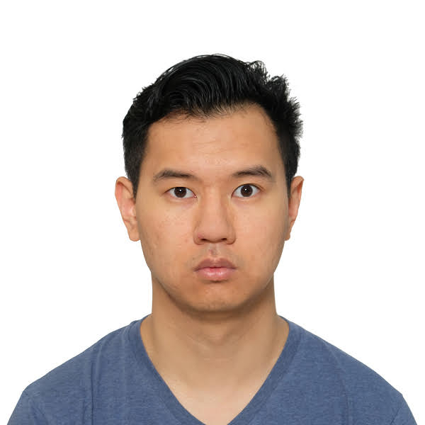
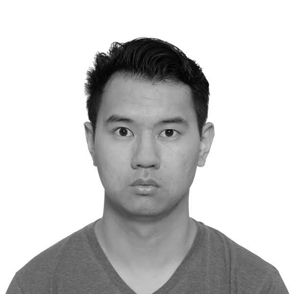
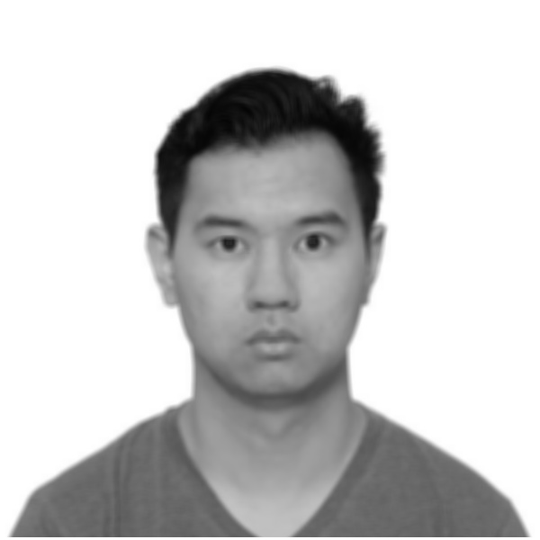

Problem Definition
- Take image of your face as input.
- Create grayscale image of your face.
- Flip your image horizontally.
- Manipulate your face in some way (eg. blur)
This task is useful to learn to use opencv.
Method and Implementation
The first step is to perform grayscale. This can be done by taking an average of all the 3 color channels (R, G, B) on a pixel-wise level.
The second step is to flip the image, from left to right. This is done by creating an empty matrix with same size as our original image. Then, copying each columns of pixel from right to left, and pasting it into our empty matrix from left to right.
The third step is to apply blur to the image. First, the program loops through all the pixel and perform a convolution. Specifically, it uses a 7x7 average convolution.
Experiments
This task was very straight forward and no repeated tests was needed.
For the blur effect, I set the width and height to 7 because the blur was not obvious with lower numbers.
Results
| Original | GrayScale | Horizontal Flip | Blur |
|---|---|---|---|
|  |  |  |
Discussion
Future work can include more complicated data augmentation, such as adding Gaussian Noise, Removing the background and replacing it with another image and different color adjustments.
Conclusions
This was a good task to familarize with openCV library and some basic image processing concepts. I can see this as a useful tool for future data augmentation and image manipulation tasks.
Credits and Bibliography
N/A